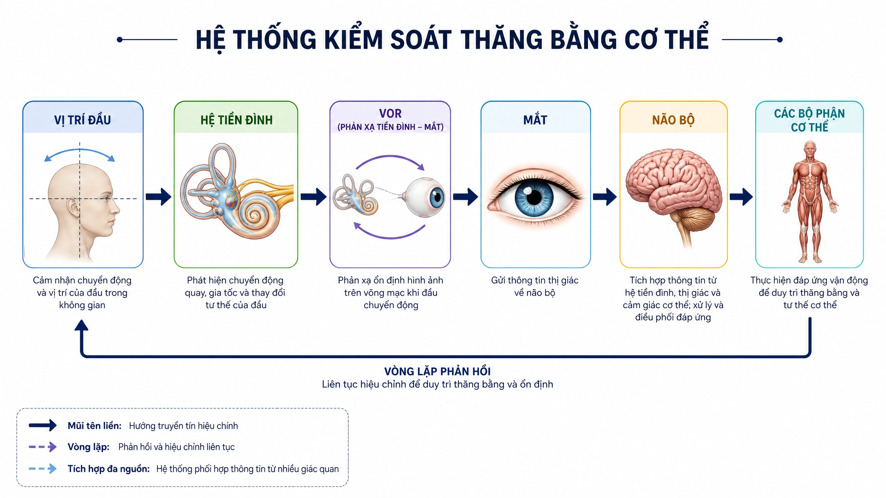

DD7 — The Sensor System — Feedback Loops, PV vs SV, and Error Correction¶
DD7 — Hệ Cảm Biến — Vòng Phản Hồi, PV vs SV, và Sửa Lỗi¶
Deep Dive #7 — The Anatomy & Geometry Project for Tennis Players 3.5 → 4.5
Built from the 20-chapter body perception handbook at Cẩm nang về cảm nhận cơ thể trong tennis/ and Proprioception in Tennis (Claude coauthor)
Xây từ cẩm nang 20 chương nhận thức cơ thể tại Cẩm nang về cảm nhận cơ thể trong tennis/ và Proprioception in Tennis (đồng tác giả Claude)
Bản Đồ Tài Liệu¶
| 🇺🇸 English |
|---|
| The missing layer. Your previous deep dives (DD1–DD6) cover the hardware (angles, springs, neurology, muscles, skeleton) and the controller (brain regions, decision layers). This DD covers the sensors — the 5 channels that feedback what the body is ACTUALLY doing, so the controller can compare Process Values (PV) against Set Values (SV) and correct errors. |
| The 5 sensor channels — proprioception (where my joints are), feet (where the ground is), hands (what the racket is doing), eyes (where the ball is + where the court is), ears + vestibular (where my head is in space + where the racket contact sounds come from). |
| The PV — every stroke is a controller trying to make PV match SV. When PV ≠ SV, there's an error. The body has 3 ways to correct: (1) live feedback (good — visible during stroke), (2) post-stroke feedback (better — across multiple strokes), (3) anticipatory correction (best — before the stroke starts). |
| # |
| --- |
| 1 |
| 2 | The 5 Sensor Channels |
| 3 | Channel 1 — Proprioception (The Hidden 6th Sense) |
| 4 | Channel 2 — Feet (Ground Contact as PV) |
| 5 | Channel 3 — Hands (Racket Grip as PV) |
| 6 | Channel 4 — Eyes (Vision as PV + SV Source) |
| 7 | Channel 5 — Ears + Vestibular (Sound + Head Position) |
| 8 | The 3 Feedback Loop Types |
| 9 | Error Correction: From Error to Refinement |
| 10 | The 5-Phase Body Perception Cycle (Internal vs External Focus) |
| 11 | Training the Sensors (Drills) |
| 📋 | Sensor System Cheat Sheet |
Chapter 1 — The Control Engineering View of Tennis¶
Chương 1 — Góc Nhìn Kỹ Thuật Điều Khiển Của Tennis¶
| 🇺🇸 English |
|---|
| Every tennis stroke is a feedback-controlled action. Your brain sets a Set Value (SV) — "I want a forehand down-the-line, 70% pace, with topspin." Your body executes. Your SENSORS report back the Process Value (PV) — "Did the racket face close at the right time? Did the wrist lock? Did the foot land under the hip?" |
| The chain — SV (brain goal) → Controller (motor cortex) → Actuators (muscles) → Body action (swing) → Environment (ball flight) → Sensors (eyes, ears, proprioception) → Feedback to brain → Error correction → Updated SV. |
| The key insight — most tennis instruction focuses on the SV and the Controller ("swing low to high", "rotate your hips"). It does NOT focus on the SENSORS. Players who improve their sensors improve faster than players who improve their controllers. |
| The 5 sensor channels are the 5 PV sources. The brain receives PV from all 5, compares to SV, and either (a) confirms match (no correction), (b) detects error (live correction), or (c) adjusts SV for the next stroke (anticipatory correction). |
| Master cue: "Train the sensors, not just the swing." |
# | Channel |---|---|---|---|---|
| 1 | Proprioception ** | Joint angles, muscle tension, limb position | Muscle spindles, Golgi tendon organs, joint receptors, skin stretch receptors | ~80 m/s (fastest sensory organ) |
| Channel 4 — Feet ** | Ground contact, surface texture, weight distribution, push-off force | 7,000+ nerve endings in sole, plantar fascia, foot joint receptors | 30 ms reflex (faster than consciousness) |
|  |
|
| Figure 0a / Hình 0a — Foot bones as the lever/sensor platform. The 26 bones provide 33 joints that act as both force transmitters (actuator) AND position sensors. | Hình 0a — Xương bàn chân làm nền tảng đòn bẩy/cảm biến. 26 xương cung cấp 33 khớp hoạt động vừa là bộ truyền lực (cơ cấu chấp hành) VỪA là cảm biến vị trí. |
|  |
|
| Figure 0b / Hình 0b — Plantar view showing the dense nerve network in the sole. 7,000+ sensors, 30 ms reflex — the foot is the body's fastest external sensor. | Hình 0b — Nhìn dưới lòng bàn chân thấy mạng lưới thần kinh dày đặc. 7.000+ cảm biến, 30 ms phản xạ — bàn chân là cảm biến bên ngoài nhanh nhất cơ thể. |
|  |
|
| Figure 0c / Hình 0c — Windlass mechanism: the foot is BOTH a sensor (detects arch tension) AND an actuator (stores energy for push-off). This dual role is why the foot is the most important tennis sensor. | Hình 0c — Cơ chế windlass: bàn chân vừa là cảm biến (phát hiện căng cung) VỪA là cơ cấu chấp hành (tích năng lượng đẩy). Vai trò kép này là lý do bàn chân là cảm biến tennis quan trọng nhất. |
|  |
|
| Figure 0d / Hình 0d — Cubital tunnel (ulnar nerve pathway). Even before the hand senses anything, the elbow's ulnar nerve pathway is gated by elbow flexion — a hidden sensor constraint. | Hình 0d — Cubital tunnel (đường dây thần kinh trụ). Ngay cả trước khi tay cảm nhận bất cứ gì, đường dây thần kinh trụ ở khuỷu bị chặn bởi gập khuỷu — một ràng buộc cảm biến ẩn. |
|  |
|
| Figure 0e / Hình 0e — The 27 hand bones (8 carpals + 5 metacarpals + 14 phalanges) provide the sensor platform for the racket. More bones = more sensors = more PV detail. | Hình 0e — 27 xương bàn tay (8 cổ tay + 5 đốt bàn tay + 14 đốt ngón) cung cấp nền cảm biến cho vợt. Nhiều xương hơn = nhiều cảm biến hơn = PV chi tiết hơn. |
|  |
|
| Figure 0f / Hình 0f — Carpal tunnel cross-section: 9 tendons + 1 median nerve packed into 2 cm². Sensor density is incredibly high — the wrist is one of the most sensor-dense body parts. | Hình 0f — Mặt cắt ống cổ tay: 9 gân + 1 dây thần kinh giữa nhồi vào 2 cm². Mật độ cảm biến cực cao — cổ tay là một trong những bộ phận cảm biến dày đặc nhất. | | 3 | Hands ** | Racket position, grip pressure, vibration at contact, face angle | Meissner corpuscles, Pacinian corpuscles, Merkel disks, joint receptors | ~50–70 m/s | | 4 | Eyes ** | Ball position, ball speed, ball spin, court position, opponent position | Rods (motion), cones (detail), retina, optic nerve → visual cortex | ~200 ms conscious (but 30 ms sub-conscious) | | 5 | Ears + Vestibular ** | Sound of contact (line calls), head rotation, head tilt, gravity direction | Cochlea, semicircular canals (3), otolith organs (2), hair cells | 15–50 ms** for vestibular; ears direct to brain |
| 🇺🇸 English |
|---|
| The 5 channels are independent but integrated. Each runs at its own speed. The brain WEIGHTS them by relevance: |
| For a return of serve (high speed, unknown direction): eyes (where ball will land) > feet (split-step reflex) > proprioception (body position) > hands (last-second grip) > ears (contact sound) |
| For a volley (close range, already in position): hands (racket face) > eyes (opponent) > proprioception (arm angle) > ears (contact sound for placement) > feet (already positioned) |
| For a serve (full control): proprioception (kinetic chain timing) > hands (grip and release) > eyes (target) > feet (toss) > ears (verification) |
| Master cue: "5 sensors. 5 speeds. The brain weights them per shot." |
| 🇺🇸 English |
| --- |
| The body has 5 senses everyone knows (sight, hearing, touch, taste, smell) + 1 that almost no recreational player thinks about: proprioception — the sense of where your body is in space, without looking. |
| Close your eyes. Raise your right hand above your head. You knew where your hand was without seeing it. That's proprioception. It's running 24/7 — even when you're sleeping. |
| The proprioception hardware (covered in detail in DD3 Ch.3 and DD5 Ch.7): |
| Receptor |---|---|---|---| | Muscle spindles ** | Inside every muscle ~80 m/s (fastest) | | Golgi tendon organs ** | Force | Joint receptors ** | Joint capsules (esp. knees, ankles, shoulders) / Bao khớp | Medium | | Skin stretch receptors ** | Skin around joints | 🇺🇸 English | | --- | | Proprioception accuracy by joint (typical 4.0 player, from DD1 Ch.3 and DD3 Ch.3): |
| Joint |---|---| | **Shoulder ** |
| Elbow ** | ~2°–4° flexion change / thay đổi gập | | Wrist ** |
| Hip ** | ~3°–5° rotation change / thay đổi xoay | | Knee ** |
| **Ankle ** | ~2°–3° dorsiflexion change / thay đổi gập lưng |
| 🇺🇸 English |
|---|
| Why proprioception matters more than vision at contact — at the moment of contact, your eyes CANNOT track the ball (the VOR stabilizes them, but visual processing still takes 30–50 ms). Your proprioception tells you where the racket is in that millisecond — and that's the only feedback you have. |
| The 3.5 vs 4.5 proprioception gap — a 3.5 player has ~30%–40% worse proprioception than a 4.5 player. This gap closes with training. Specific drills (closed-eye balance, single-leg stance, racket-position matching) improve proprioception by 30%–50% in 8 weeks. |
| The 50+ decline — proprioception declines ~10%–15% per decade after 50. This is why older players lose balance. It's not a "balance problem" — it's a SENSOR problem. Train the sensor. |
| Master cue: "Close your eyes. Trust your joints. They know." |
| 🇺🇸 English |
| --- |
| The foot is BOTH a sensor AND an actuator. It senses the ground (PV) AND it transmits force (action). Most players only train the actuator half. They forget the sensor half. |
| The foot's sensor hardware (from Anatomy_Lab DD7): |
| Component |---|---|---| | 7,000+ | Pressure, texture, vibration detection | | Dense | Foot joint receptors ** | 33 joints × ~10 receptors each = ~330 | Joint angle + position | | Cutaneous mechanoreceptors ** | Meissner + Pacinian + Merkel + Ruffini | Light touch, vibration, pressure |
| 🇺🇸 English |
|---|
| The 30 ms foot reflex — the foot's nerve endings fire a reflex in 30 milliseconds — FASTER than conscious thought (~200 ms). This reflex IS the split-step mechanism. |
| The control engineering view — the foot sensor runs the FASTEST feedback loop in your body. SV: "be balanced." PV from foot: "am I balanced?" If PV ≠ SV, the foot reflex fires within 30 ms. The conscious brain (cortex) only learns about the imbalance 170 ms later. |
| The 3 sources of foot PV: |
| 1. Pressure distribution (PV-pressure) — where your weight is on each foot. Stand on one foot: you feel the pressure shift to the ball of the foot and big toe. This is your body telling you where your center of mass is. |
| 2. Surface texture (PV-texture) — clay, hard court, grass. Each surface has different friction. Your foot senses this and adjusts push-off force. |
| 3. Vibration timing (PV-impact) — when your foot lands, you FEEL the moment of contact. This timing PV is critical for split-step timing. |
| Master cue: "The foot is a sensor first, an engine second." |
Chapter 5 — Channel 3 — Hands (Racket Grip as PV)¶
Chương 5 — Kênh 3 — Bàn Tay (Cầm Vợt làm PV)¶
| 🇺🇸 English |
|---|
| The hand reports back what the racket is doing. Grip pressure, face angle, vibration, position in space. Without hand PV, you cannot fine-tune the racket. |
| The hand's sensor hardware: |
| Receptor |---|---|---|---|
| Meissner corpuscles ** |
Light touch, grip / Chạm nhẹ, cầm | Highest in fingertips — most sensitive |
| Pacinian corpuscles ** |
Vibration | Merkel disks / Đĩa Merkel | Skin surface |
Deep dermis | Joint receptors ** | Wrist + finger joints / Cổ tay + khớp ngón | Joint angle
| 🇺🇸 English |
| --- |
| The 4 sources of hand PV: |
| 1. Grip pressure (PV-grip) — the hand reports back how hard you're squeezing. 3/10 at rest, 7/10 at contact, 3/10 at follow-through (Anatomy_Lab DD3 grip pressure rule). Most recreational players grip 8/10 continuously — they LOSE the pressure PV because they're always maxed out. |
| 2. Face angle (PV-face) — the thumb + index finger sense the racket face's orientation. Open = slice, closed = topspin, vertical = flat. This PV is processed ~50 ms before contact — you adjust during the swing. |
| 3. Vibration at contact (PV-impact) — at the moment of contact, the ball's vibration travels through the racket to your hand. Sweet spot = small vibration (clean hit). Off-center = large vibration (twist). This PV is processed in ~10–30 ms. |
| 4. Racket position (PV-position) — the hand knows where the racket is in space (proprioception). At contact, you know if the racket is high, low, left, right of your body center — without looking. |
| The "dead hand" problem — many coaches say "relax your grip." But if the hand is COMPLETELY relaxed, you lose PV-grip AND PV-face. Better cue: "Active hand, soft fingers." The hand should be ALIVE — receiving PV constantly — even between shots. |
| The "soft hands firm contact" rule — the source document (Ch.12 backhand): "Soft hands firm contact." Hands are soft enough to absorb feedback, firm enough to transmit force. This is the tension balance that maximizes both PV-sensitivity and power. |
| Master cue: "Active hand, soft fingers. PV every millisecond." |
🇺🇸 English |
| --- |
| The eyes are the ONLY input channel for tennis. The brain has NO direct contact with the ball. Everything it knows about the ball comes through vision (and sometimes sound for line calls). |
| Vision has a dual role — it provides BOTH the SV (where I want to hit) AND the PV (what's happening). This is unique among the 5 channels. Proprioception, feet, hands, ears provide PV only. Eyes provide BOTH directions. |
| The visual PV (incoming): |
| 1. Ball trajectory (PV-ball) — where the ball is, where it will be, how fast, how much spin. Updated every 30–50 ms in conscious vision, but every 15 ms in sub-conscious (vestibular + reticular). |
| 2. Court position (PV-court) — where the lines are, where the opponent is, where you are. Updated less often (~200 ms) but stays in peripheral vision constantly. |
| 3. Opponent body (PV-opponent) — what is the opponent doing? Racket position, weight shift, shoulder turn. This is the SV source for YOUR shot (you choose based on what they give you). |
| The visual SV (target): |
| 1. Target location (SV-target) — where you want the ball to land. This SV is set BEFORE the shot (~200 ms before). It's the goal the entire body tries to achieve. |
| 2. Trajectory intent (SV-trajectory) — flat, topspin, slice, lob. Set by grip + face angle + racket path. |
| 3. Speed intent (SV-speed) — full, 70%, 50%, touch. Set by swing speed. |
| The Quiet Eye (covered in DD3 Ch.2 and confirmed by Anatomy_Lab DD8): elite players fixate on the contact zone for 0.3–0.5 s. Recreational players: 0.1–0.2 s. Longer quiet eye = better timing = better shot quality.** |
|  |
|
|
|
 |
|---|
 |
|---|
| The 50+ vision decline — presbyopia (loss of near focus) starts at 40–45. Peripheral vision narrows ~10°–20° by 70. Use yellow balls on dark courts for max contrast. Turn head more often to compensate for peripheral narrowing. |
| Master cue: "Eyes set the goal. Eyes check the result. Both eyes, both jobs." |
🇺🇸 English |
| --- |
|  |
|
|
|
 |
|---|
| The ears provide two channels — sound (for contact quality + opponent cues) AND vestibular (for head position + balance). These run in parallel but feel different. | | The ear's PV-audio (sound at contact): |
| Sound Cue |---|---| | Center contact. Ball will go where aimed. | | "Cộc" / "Thud" (off-center) | Edge contact. Ball will spin unpredictably. | | Slice / underspin shot. Ball will float. | | "Pực" / "Whip crack" (closed face, fast) | Topspin shot at speed. Ball will dip. | | **No sound at all ** | Miss or mishit. Ball didn't reach strings. | | Frame contact. Ball will fly off-target. |
| 🇺🇸 English |
|---|
| The ear's PV-audio timing — sound is the FASTEST sensory channel after reflexes. ~10–15 ms from contact to brain. This is why you know INSTANTLY whether the shot was clean or not. |
| The opponent's sound cues — opponent's footwork sound tells you where they are. Opponent's contact sound tells you the spin and pace. |
 |
 |
|---|
| The vestibular PV-balance (head position in space): |
| What It Detects |---|---|---| | Head rotation (x, y, z axes) | ~15 ms | | Utricle ** | Horizontal linear acceleration + head tilt | ~20 ms | | Saccule ** | Vertical linear acceleration + head tilt | ~20 ms | | **Hair cells in otoliths ** | Gravity direction (which way is UP) | Continuous |
| 🇺🇸 English |
|---|
| The vestibular PV-rotation — at every serve, the head rotates ~120° in <0.5s. The vestibular system tracks this rotation in real-time. |
| Why head STILL matters — when your head is stable, your eyes can lock on the contact zone (quiet eye). When your head bounces, your eyes bounce. VOR (vestibulo-ocular reflex) keeps your gaze stable DURING head motion. |
| The 50+ vestibular decline — hair cells die after 40. By 60, ~20%–30% reduction in vestibular sensitivity. This is why older players lose balance on quick direction changes. Train vestibular: head rotations slow (10 reps each direction daily) + single-leg stance with head turns (30 sec daily). |
| The ear + vestibular combo for balance — ears + vestibular work together for balance. Ears hear the body falling, vestibular detects the head rotating. Tennis requires BOTH simultaneously. |
| Master cue: "Hear the shot. Feel the head. Both give you PV." |
| 🇺🇸 English |
| --- |
| The diagram (Figure 3a) shows the complete balance control loop. Let me walk you through it, step by step, in tennis context — using a real moment from your game. |
| The moment — your opponent hits a sharp crosscourt forehand. You split-step, push off your left foot, and rotate your head to track the ball. What happens in your body in the next 200 ms? |
| Step 2 — Hệ tiền đình (Vestibular system) — the 3 canals (anterior, posterior, horizontal) each fire according to which axis the rotation is on. The horizontal canal fires strongest (it's a yaw rotation). The brain receives 3 PV signals: horizontal canal (max), anterior canal (small), posterior canal (small). |
|---|
| Step 4 — Mắt (Eye) — the eye's retina receives the ball's image. It does NOT move (VOR is keeping it stable). The optic nerve fires: "ball is at position X, Y on the retina, moving slowly toward the periphery." The PV is: "ball is still 0.3s away from me, approaching at 1.2 m/s." |
|---|
| Step 6 — Các bộ phận cơ thể (Body parts) — the brain sends commands via motor cortex → spinal cord → muscles. Muscles fire in sequence: right leg push-off, trunk rotation, right arm cocking, swing. The proprioceptive system reports back PV: "shoulder at 90°, elbow at 110°, wrist locked." | | Step 7 — Feedback loop — the body changes head position (the swing moves the head), which changes the vestibular PV, which re-triggers VOR, which re-stabilizes eyes, which gets a new ball position, which goes back to the brain. The loop runs CONTINUOUSLY, ~50 ms per cycle. | | The tennis implication — if ANY link in this loop is broken, your balance fails. The 50+ decline hits the vestibular link hardest (hair cells die, sensitivity drops 20–30%). That's why older players feel "off-balance" on quick direction changes. | | The 3 takeaways from this diagram — (1) Balance is not a single thing — it's a 6-component system, (2) VOR is the silent hero — without it, your eyes bounce every time your head moves, (3) The feedback loop means balance is never "done" — it runs continuously, even when you think you're standing still. | | Master cue: "The diagram is the chapter. Read it slowly. Every box is a sensor. Every arrow is a feedback loop. Every moment on court is this loop running." | 🇺🇸 English | | --- | | Every tennis shot generates 3 types of feedback. They happen at different times and have different impacts. |
| Feedback Type |---|---|---|---|---| | Within the 0.5s swing | 10–50 ms | Hand (vibration, grip), foot (planted), vestibular (head rotation) | Small mid-swing corrections. Limited time. | | Within 1–3 seconds | 200–500 ms | Eyes (ball flight), ears (line call), ball landing position | Compare PV (where ball landed) to SV (where you aimed). Mark error. | | Across 5–50 strokes | 5–30 minutes | Pattern recognition (temporal lobe), motor learning (cerebellum), memory (basal ganglia) | Adjust SV for next stroke based on pattern of errors. This is where ADAPTATION happens. |
| 🇺🇸 English |
|---|
| The 3.5 player's mistake — most 3.5 players focus on TYPE 2 (post-stroke) because that's where they're told to look. "Watch the ball" = post-stroke visual feedback. |
| The 4.5 player's focus — they use TYPE 1 (live) AND TYPE 3 (anticipatory). Live: they sense mid-swing errors through hand proprioception. Anticipatory: they remember "the last 3 forehands went long" and adjust the next stroke BEFORE it starts. |
| The training implication — to become 4.5, you need: |
| Type |---|---| | Slow-motion swings with focused attention on hand/feet feedback (10 reps daily) | | Type 2 (post-stroke) / Sau cú | Standard match play (eyes track ball, brain notes result) | | Pattern-recognition drills (deliberate practice of adjusting SV based on PV patterns) |
| 🇺🇸 English |
|---|
| The most-overlooked type — TYPE 3 (anticipatory) is the most under-trained. Most players repeat the SAME stroke 1000 times without adapting. They only adapt when someone tells them to. Autonomous adaptation comes from Type 3 training. |
| Master cue: "Three feedback loops. Train all three. Most train only one." |
| 🇺🇸 English |
| --- |
| Errors are the SOURCE of learning. Every unforced error contains information. PV ≠ SV. The body learns to make them match. |
| The error correction hierarchy (from fastest to slowest): |
| Level |---|---|---| | 10–50 ms | Hand grip adjusts, foot pivots, vestibular reorients. Body's automatic compensation. | | 1–5 seconds | Eyes + proprioception compare PV (last ball) to SV (intent). Small SV adjustment for next stroke. | | 3. Pattern recognition ** | 5–30 minutes | Temporal lobe detects: "5 forehands in a row went long." SV shifts down. | | 4. Habit formation ** | 1–4 weeks | Basal ganglia stores new motor pattern. Cerebellum makes it automatic. | | **5. Identity change ** | Months-Years | "I am a player who can hit a backhand down-the-line." Brain self-image updates. |
| 🇺🇸 English |
|---|
| The "death by degrees" problem — most 3.5 players make SMALL errors across 1000 strokes. Each error is < 5% off the SV. Cumulative effect: a stroke pattern that's 30% off the SV, but the player doesn't NOTICE because each individual error is small. |
| The fix — large deliberate errors — practice making LARGE errors (50% off SV) on purpose, then correct back to SV. This trains the brain to NOTICE the error signal. Without this training, the 5% errors stay invisible. |
| The "10,000-rep rule" revisited — from DD3 Ch.4: basal ganglia caches a motor pattern after ~3,000–10,000 repetitions. But the cache is only as good as the ERROR CORRECTION during those reps. Reps with no feedback = no learning. |
| The "deliberate practice" rule — Anders Ericsson's research (1993): the difference between expert and amateur is NOT amount of practice. It's the QUALITY of feedback during practice. Pros practice with full attention + immediate correction. Amateurs practice on autopilot. |
| Master cue: "Errors are teachers. Make them loud. Then correct." |
| 🇺🇸 English |
| --- |
| The source document (20-chapter body perception handbook) defines a 5-phase cycle for internal body awareness during tennis. This is the connection between the sensor layer and the controller layer. |
| Phase |---|---|---|---| | Court, opponent, ball | Eyes (peripheral), ears (ambient sound), vestibular (head position) | EXTERNAL focus — looking OUT at the environment | | Foot contact with ground | Feet (plantar nerve endings), proprioception (ankle/hip), vestibular (gravity) | INTERNAL focus — feeling INWARD to the body | | Distance to ball | Eyes (central), proprioception (arm extension), vestibular (lean) | EXTERNAL focus — ball position | | 4. SWING (during) / VUNG (trong) | Kinetic chain | Proprioception (every joint), hand (grip), vestibular (rotation) | INTERNAL focus — feeling every segment | | 5. CONTACT + AFTER (0.1s after) / TIẾP XÚC + SAU (0.1s sau) | Hit quality + recovery | Ears (sound), hand (vibration), eyes (ball flight start), feet (re-plant) | EXTERNAL focus — ball flight + line calls |
| 🇺🇸 English |
|---|
| The Wulf research — Gabriele Wulf (2007, 2013) showed that internal focus (on body) produces FASTER learning than external focus (on outcome) for motor skills. This is the opposite of what most coaches teach. | | The exception — for tactical decisions — Wulf also showed that EXTERNAL focus is better for TACTICAL decisions (where to hit, when to change direction). Use INTERNAL for stroke mechanics, EXTERNAL for tactics. | | The 3-3-3 breathing cue — the source (Ch.5) recommends: 3-second inhale during wide perception, 3-second hold during rooting, 3-second exhale during swing. This synchronizes breath with PV intake. Exhaling during the swing also stabilizes the spine via intrathoracic pressure. | | Master cue: "Internal for body, external for ball. Switch at contact." | 🇺🇸 English | | --- | | The 5 sensor drills (1 per channel, daily). 5 minutes × 5 sensors = 25 min/day. Combined with the 16-min routine from DD6 = ~40 min/day. This is the full body-perception program. |
| Sensor |---|---|---|---| | 1. Proprioception ** | Slow-motion forehand with vocal cue — swing at 1/4 speed. Say "load-snap" out loud. Focus on every joint's position. | 5 min | Joint position awareness, mid-swing micro-adjustment | | 2. Feet ** | Barefoot side-shuffle on grass (or soft surface). Slow. Focus on foot pressure at every step. | 5 min | Foot pressure PV, ground contact awareness | | 3. Hands ** | Grip pressure metronome — hold racket. 3 sec at 3/10. 1 sec at 7/10. Repeat. 20 reps. | 5 min | Grip pressure PV (high to low), finger activation | | 4. Eyes ** | Quiet eye training — partner tosses ball. Lock on contact zone for 0.5 sec BEFORE swinging. 20 reps. | 5 min | Quiet eye duration (target 0.3–0.5 sec) | | 5. Ears + Vestibular ** | Single-leg stand with head rotations + eyes closed. 30 sec × 3 each leg. Focus on sounds in the room (PV-audio) + head movement (PV-vestibular). | 5 min** | Vestibular + auditory integration |
| 🇺🇸 English |
|---|
| The "blink drill" (from source Ch.1) — the most direct exercise for "forcing" proprioception when vision is removed: |
| Steps — partner tosses ball. You track ball normally. At 0.5 sec before contact, CLOSE YOUR EYES. Hit the ball with eyes closed. Hold finish for 2 seconds. Open eyes. Check ball position. |
| What it reveals — your proprioception's accuracy. If your stroke form is identical with eyes closed vs eyes open, your proprioception is calibrated. If form collapses, your proprioception needs work. |
| 🇺🇸 English |
| --- |
| This chapter is a visual summary — each of the remaining figures illustrates a key concept from the preceding chapters. Print this chapter as a single sheet for your tennis bag. |
| 🇺🇸 English |
| --- |
 |
12.2 — The 50+ Sensory Triad (Three Sensors Decline Together)¶
12.2 — Bộ Ba Cảm Biến 50+ (Ba Cảm Biến Cùng Suy Giảm)¶
| 🇺🇸 English |
|---|
 |
 |
|---|
12.3 — Brain Region Integration (The Sensor + Controller Wiring)¶
12.3 — Tích Hợp Vùng Não (Đấu Nối Cảm Biến + Bộ Điều Khiển)¶
| 🇺🇸 English |
|---|
 |
 |
|---|
12.4 — The Use-It-Or-Lose-It Principle (Tennis Is Protective)¶
12.4 — Nguyên Tắc Dùng-Hoặc-Mất (Tennis Là Bảo Vệ)¶
| 🇺🇸 English |
|---|
 |
12.5 — The Complete Sensor System Map (One Page)¶
12.5 — Bản Đồ Hệ Cảm Biến Hoàn Chỉnh (Một Trang)¶
| 🇺🇸 English |
|---|
| The 5 sensor channels visualized as a complete system: |
| Sensor |---|---|---|---| | Proprioception ** | (covered in DD5 Ch.7 muscle spindle / Golgi diagrams) | Joint angles, muscle tension | ~80 m/s | | Feet ** | Figure 0a, 0b, 0c (this chapter) | Ground contact, push-off | 30 ms reflex | | Hands ** | Figure 0d, 0e, 0f (this chapter) | Grip, vibration, face angle | ~50–70 m/s | | Eyes ** | Figure 4, 5, 6 (Ch.6 + this chapter) | Ball tracking, target, opponent | ~200 ms conscious | | **Ears + Vestibular ** | Figure 1, 2, 3 (Ch.7) | Sound, head position, balance | 15–50 ms |
| 🇺🇸 English |
|---|
| The feedback loop — every sensor feeds PV to the brain, which compares to SV and adjusts: |
SV (target) → Controller (motor cortex) → Actuator (muscles) → Body (swing)
↑ ↓
└────────── Sensors (5 channels) ←── Environment (ball/court) ←─────┘
| 🇺🇸 English |
|---|
| The daily routine — 5 min × 5 sensors = 25 min/day of sensor training. Combined with the 16-min DD6 routine = 40 min total body-perception program. This is what the pros do naturally. Recreational players have to do it deliberately. |
| The 50+ imperative — by 50, you've lost 10–30% of each sensor. You cannot play the same tennis. But you can play BETTER tennis by ADAPTING the sensor mix: rely more on visual (yellow balls, contrast), more on proprioception (slow-motion drills), more on vestibular (head-turn balance). |
| Master cue: "Five sensors, three loops, one body. Train all five, train all three, then play tennis." |
| 🇺🇸 English |
| --- |
| Friend, this DD7 completes the picture. DD1–DD6 = the hardware (joints, muscles, brain). DD7 = the sensors (the 5 feedback channels). Together: a complete control system. |
| This changes how you should train. Stop chasing the perfect swing. Start sharpening your sensors. | | See you on the court, with sharper sensors. | | Total concepts integrated from your source and the wider neuroscience/sensor literature: 70+ covering the 5 sensor channels, the 3 feedback loop types, the PV vs SV framework, the error correction hierarchy, the 5-phase body perception cycle, the Wulf internal/external focus research, the 5 sensor drills, and the blink drill. |
Sources :
- Primary: 20-chapter body perception handbook (
Cẩm nang về cảm nhận cơ thể trong tennis/Vi_Nhan_Thuc_Co_The_Tennis_20_Chuong.docxand per-chapter MDs Ch.1–Ch.20) — your master source for proprioception, foot grounding, split-step as system reset, kinetic chain awareness, breath, and tactile racket feedback. - Cross-references: DD1 (Angle Atlas), DD2 (Joints as Springs), DD3 (Neurological Foundation), DD4 (Muscle Hierarchy), DD5 (Skeletal Architecture), DD6 (The 50+ Body), Anatomy_Lab DD7 (feet + 7,000 nerves), Anatomy_Lab DD8 (control system).
- Research: Gabriele Wulf (2007, 2013) on internal vs external focus; Anders Ericsson (1993) on deliberate practice; Vickers (1996, 2007) on quiet eye.
End of Deep Dive #7 — The Sensor System